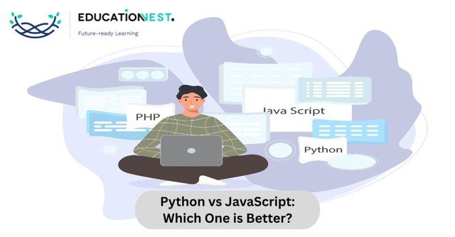
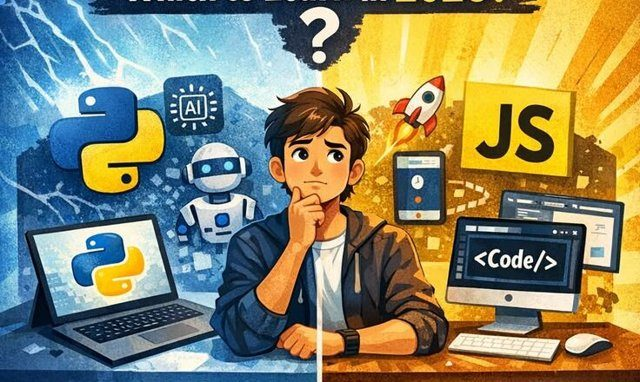
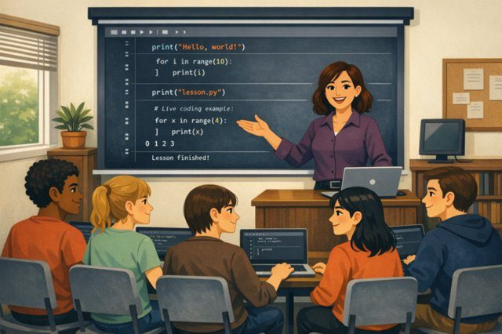

Python or JavaScript first? Compare what each language is best for, how they feel for beginners, and a simple way to choose — plus how to start today.

If you are starting to learn programming, you have probably heard conflicting advice: learn Python, no, learn JavaScript, no, learn something else entirely. It is confusing, and it can stop you before you write any code. The truth is simpler than the debate makes it sound. Both Python and JavaScript are good first languages, both are used in real work, and neither choice will ruin your future. What matters most is choosing the one that matches what you want to build first, and then sticking with it long enough to learn the basics.
Python is known for its clean, readable style. Its code often looks close to plain English. A simple instruction in Python usually takes fewer words and fewer symbols than the same idea in many other languages, so you can focus on learning how programming works instead of fighting with complicated punctuation.
Python is widely used for data analysis, automation, and artificial intelligence. If you want to organise information automatically, analyse a set of numbers, build a small tool that saves repetitive work, or later move into data science or machine learning, Python is a natural fit. It is also used for building the behind-the-scenes part of websites, often called the back end, with frameworks such as Django and Flask. Beginner courses on freeCodeCamp, Coursera, and Khan Academy often introduce Python first, so finding help is easy.

JavaScript is the language of the web browser. Every modern browser understands it, which means JavaScript is what makes websites interactive. When you click a button and a menu opens, when a form checks your input straight away, or when a page updates without reloading, JavaScript is usually doing that work.
That instant, visible result is a big advantage for beginners. You can open a browser, write a few lines, and see something change on screen straight away. That quick feedback keeps many learners motivated. JavaScript is also used beyond the browser. With Node.js, developers use JavaScript on the server as well, so it is possible to build a complete web application using mainly one language. React, a popular JavaScript tool, is used to build user interfaces for websites and apps.
JavaScript can feel less forgiving than Python at first, so you may need a little more patience in the early weeks.
Think of the difference in terms of what you want to make. If your goal is to understand programming concepts clearly, work with data, automate tasks, or move towards artificial intelligence, Python usually gives you the gentler start. Its readable style helps you learn ideas such as variables, loops, conditions, and functions without extra complications getting in the way.
If your goal is to build websites and web applications, especially the parts people see and click on, JavaScript is the essential choice. You cannot build a modern interactive website without it, and learning it first means everything you practise is directly useful for web development.
Both languages have large communities and plenty of free tutorials, and learning one well makes the second easier, because the core ideas transfer.

Here is a simple way to decide. Choose Python first if you are not sure what you want to build yet, if you are interested in data, automation, or artificial intelligence, or if you want the easiest possible introduction to programming ideas. Choose JavaScript first if you know you want to build websites, if you enjoy visual results, or if you want to work towards front-end or full-stack web development.
If you are still undecided after that, choose Python. It is a common recommendation for complete beginners because it lets you learn the fundamentals with less friction, and you can add JavaScript later when you start building websites. The worst choice is not Python or JavaScript. The worst choice is spending months debating and never starting.
Pick one language and one beginner course, and commit to it for at least a few weeks. Try to practise a little every day rather than studying for many hours once a week. Small, regular practice builds memory far better than occasional long sessions. Build tiny projects as you learn, such as a calculator, a to-do list, or a simple quiz. These small wins teach you more than watching endless tutorial videos without writing any code yourself.
When you get stuck, read the error message slowly, search for the problem, and ask for help in a course forum. Remember that your first language is a starting point, not a life sentence. Many developers use several languages over their careers. Start with the one that fits your goal today, learn it properly, and the next language will feel much easier.
For most complete beginners, yes — Python's readable style usually makes the first concepts easier to grasp. JavaScript is still a good first choice if web development is your clear goal.
It is better to learn one well first. The core ideas transfer, so the second language becomes much easier once you understand variables, loops, and functions in the first.
No. Many developers use several languages over their careers. What matters is learning programming fundamentals properly and building small projects.